Long before an engineer ever sketched a blueprint, a burr had already invented the hook-and-loop fastener, a kingfisher had already solved high-speed drag, and a honeybee had already worked out the most efficient shape to tile a plane. Biomimicry is the practice of studying a living thing's design closely enough to borrow its solution — because the natural world has been quietly running the longest, most rigorous design lab there is.
Essential question: If a bird's bone, a spider's web, and a beehive are all engineering blueprints — who wrote them, and what should we learn from reading them before we start building?
Why Look at Nature Before You Build?
Every living organism you can see is the product of an enormous design process. A tree's branching, a shell's spiral, a wing's curve — none of it is random. It is precise, repeatable, and it works, often better than anything humans have engineered from scratch. Ask why, and you'll get two answers. Some say it's 3.8 billion years of trial and error, with every failed design quietly deleted. Others look at the same hexagon, the same spiral, the same branching pattern showing up again and again across totally unrelated organisms, and see something else: order too consistent, too mathematical, and too useful to be an accident.
This class leans toward the second view. Scripture describes creation itself as evidence of its Maker's craftsmanship — "The heavens declare the glory of God; the skies proclaim the work of his hands" (Psalm 19:1) and "since the creation of the world God's invisible qualities... have been clearly seen, being understood from what has been made" (Romans 1:20). Whichever lens you use, the practical engineering lesson is identical: nature's answers have already survived the harshest possible testing. Before you invent something new, it pays to check whether creation already solved your problem — and to study how, not just copy the outer shape.
Biomimicry (from the Greek bios, "life," and mimesis, "to imitate") is the practice of designing technology by studying how living things solve the same problem — moving efficiently, staying cool, sticking to a surface, packing material with almost no waste.
The Biomimicry Method
Biomimicry isn't "make it look like an animal." It's a three-step discipline engineers use to pull a working principle out of a living system, so it can be rebuilt in a completely different material at a completely different scale.
Observe
Watch closely. What problem is this organism actually solving — moving through fluid, shedding heat, gripping a surface, surviving impact?
Abstract
Strip away the biology. Describe the underlying shape, structure, or process in the language of physics, geometry, or chemistry — not "kingfisher," but "a shape that displaces water with almost no shockwave."
Emulate
Rebuild that principle in steel, plastic, fabric, or code. The invention rarely looks like the animal — it captures the function, not the costume.
Common trap: a robot with fake feathers glued on is decoration, not biomimicry. A train nose reshaped around a beak's pressure-wave geometry is biomimicry — even though it looks nothing like a bird.
Reading Nature's Blueprints: A Short History
Engineers have been borrowing from creation for over 500 years — long before "biomimicry" had a name. These are the real people, drawings, and machines behind the story.
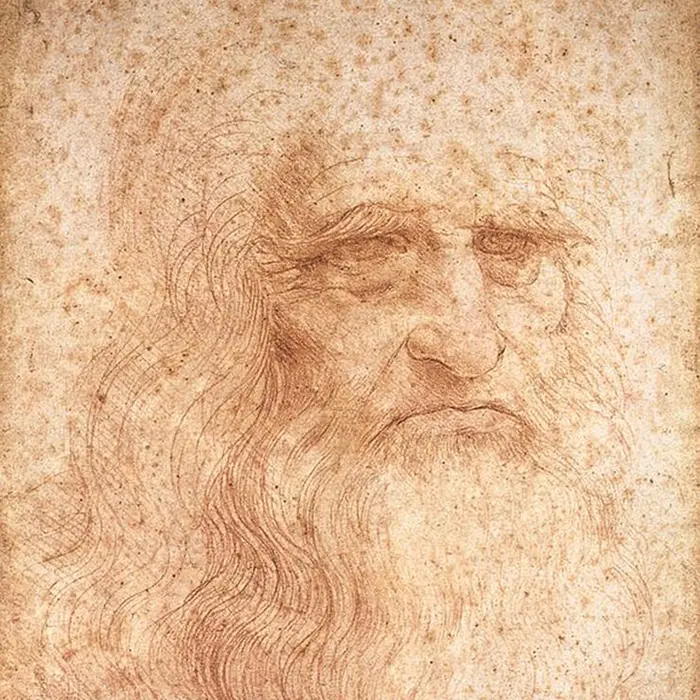
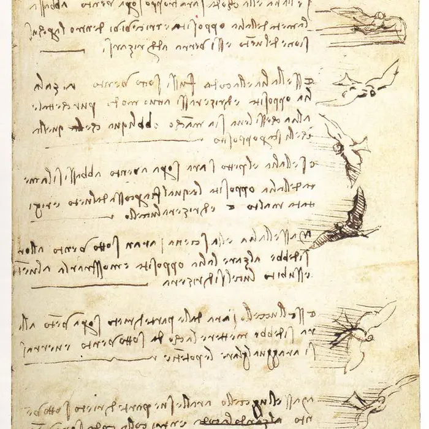
1485 – 1505
Da Vinci sketches the sky
Leonardo da Vinci filled notebooks like his Codex on the Flight of Birds with anatomical studies of wings, convinced that if he understood exactly how a wing worked, he could build a flying machine. His ornithopter never flew — but his insistence on studying the animal's mechanics before designing became the biomimicry blueprint itself.
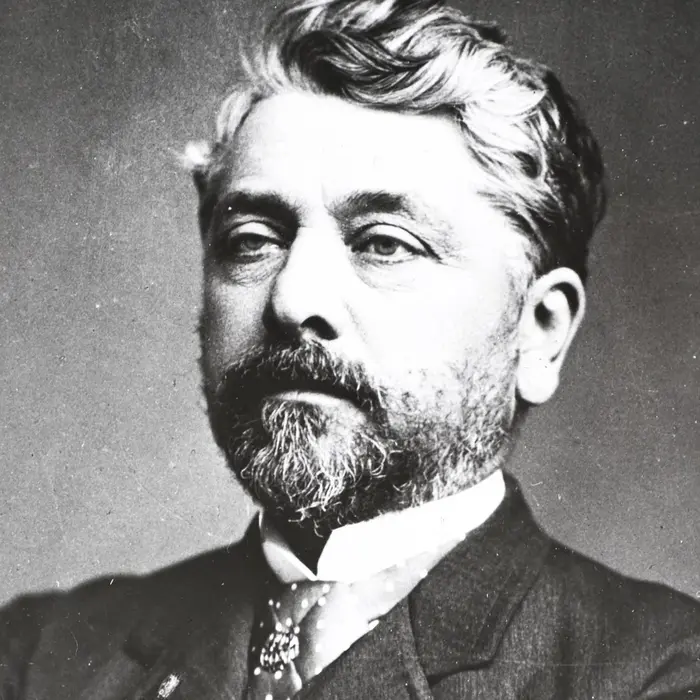
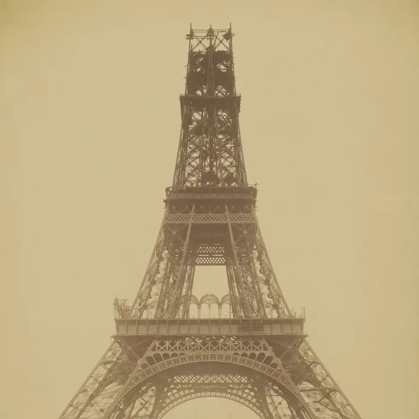
1866 – 1889
A bone builds a tower
Swiss engineer Karl Culmann noticed that the internal lattice of a cow's femur — thin struts of bone arranged along the exact lines of mechanical stress — matched patterns he'd seen in crane design. Two decades later, Gustave Eiffel's engineers curved the four legs of the Eiffel Tower along that same stress-line logic: maximum strength, minimum material, exactly where the load demanded it.
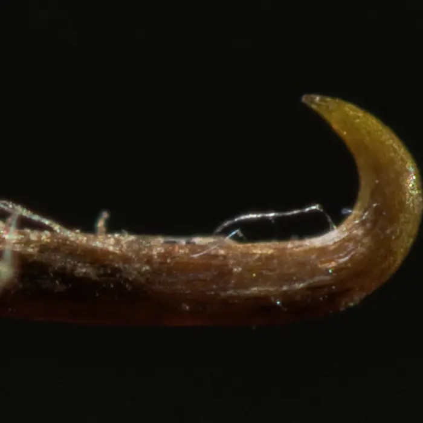
1941 – 1955
A burr invents Velcro
Swiss engineer George de Mestral came home from a walk covered in burdock burrs and examined them under a microscope. Each burr was covered in tiny hooks that snagged the loops in fabric and fur. Fourteen years of development later, he patented Velcro — a fastener built from exactly that hook-and-loop principle.
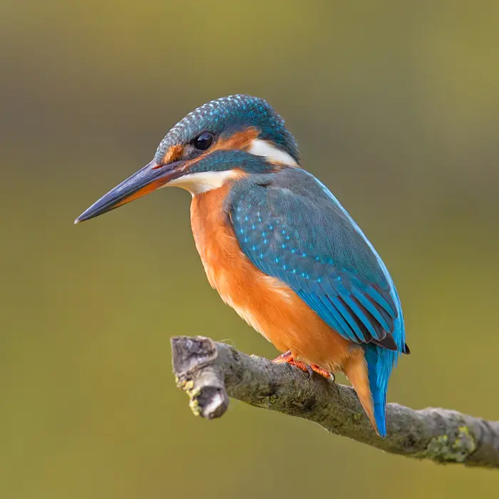
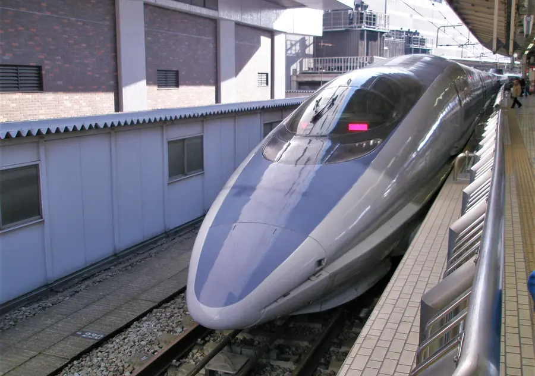
1994
A kingfisher solves the tunnel boom
Japan's original 300-series Shinkansen bullet train shot a deafening shockwave out of every tunnel it entered. Engineer and birdwatcher Eiji Nakatsu, tasked with fixing it, remembered how a kingfisher dives from air into water with barely a splash. He reshaped the 500-series train's nose around the kingfisher's beak geometry — the boom disappeared, and the train got faster and quieter.
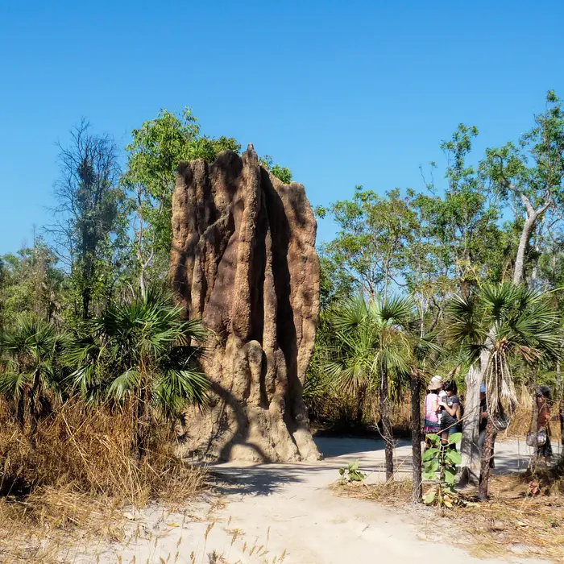
1996
Termites air-condition a building
Architect Mick Pearce studied African termite mounds, which stay a constant temperature through a network of internal chimneys that pull air through by convection. His Eastgate Centre in Harare, Zimbabwe uses the same passive-airflow principle and needs no conventional air conditioning, cutting energy use by around 90%.
1997
The field gets a name
Biologist Janine Benyus publishes Biomimicry: Innovation Inspired by Nature, arguing engineers should stop asking "what can I extract from nature?" and start asking "what can I learn from it?" The book turns a centuries-old habit into a named design discipline.
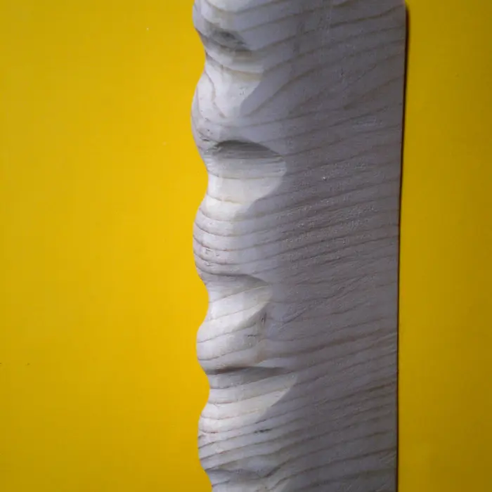
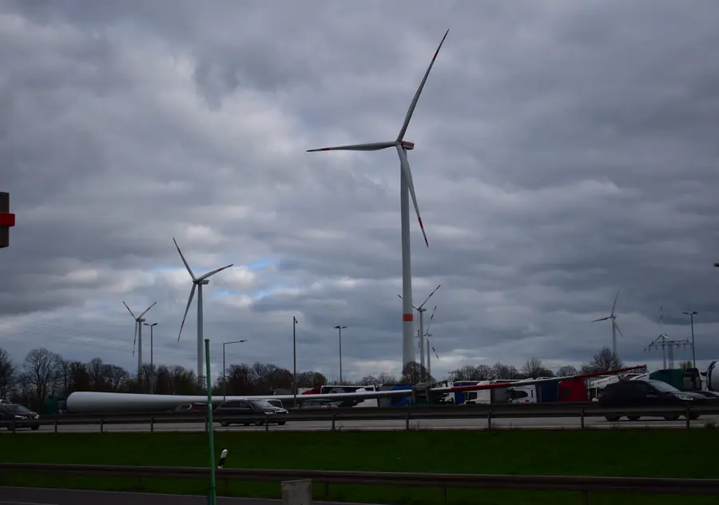
2008
Bumpy whale fins reinvent wind turbines
Biologist Frank Fish noticed that humpback whales — enormous, slow-looking animals — turn sharply underwater thanks to bumps (tubercles) along their flippers' leading edge. Engineers copied the bumps onto wind turbine blades; the tubercled blades stall less and run quieter at the same size.
Patterns Written Into Creation
Some of nature's best "engineering" isn't a single trick — it's a mathematical pattern that shows up over and over, in organisms that share no common ancestor and never once compared notes.
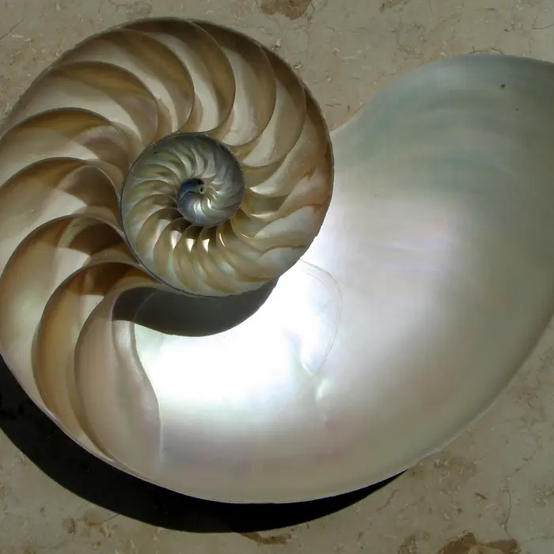
The Golden Spiral
Each turn grows by the same ratio (≈1.618). Found in nautilus shells, ram's horns, and the seed spirals of a sunflower head — a way to pack growth efficiently without ever changing shape.
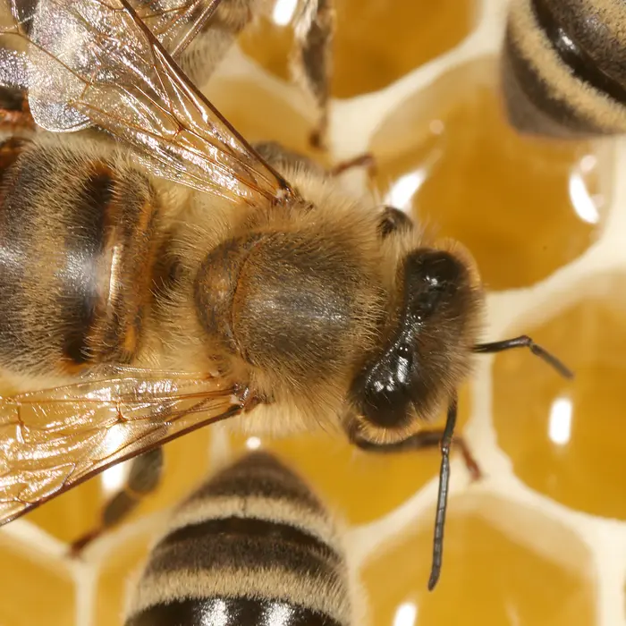
The Hexagon
Bees build honeycomb from hexagons because, of every shape that can tile a flat surface with no gaps, the hexagon holds the most honey for the least wax — a fact mathematicians only formally proved in 1999.
Fractal Branching
Trees, lungs, blood vessels, and river deltas all repeat the same branch-splitting-into-branches pattern at every scale — a shape that packs maximum surface area for exchanging air, fluid, or light into minimum space.
Try it: next time you're outside, look for one of these three patterns — a spiral, a hexagon, or a branch splitting in two. Note what the organism uses it for. That's the first step of biomimicry: observe.
Interactive investigation
Nature vs. Invention Matching Lab
Select an organism, read its engineering clues, then choose the real invention it inspired. Real biomimicry always starts from evidence — not a guess about what "seems similar."
0 of 6 matched
Burdock burr
Tip: match the physical clues to a function, not to the animal's name.
Engineer's Challenge: Design Your Own Biomimetic Invention
Now run the three-step method yourself, on an organism nobody has assigned you.
Choose
Pick a plant or animal you can observe in person, in a video, or in a photo. Something ordinary is fine — a pinecone, a spiderweb, an ant.
Observe
Write down one thing its body does exceptionally well: grips, insulates, flies, filters, self-repairs, self-cleans.
Abstract
Describe that ability in physics or math terms, with no mention of the organism's name. What shape, material, or structure makes it work?
Sketch & Pitch
Sketch a product or technology that uses that same principle, then explain to a partner what problem it solves and how nature solved it first.
Stretch goal: look up your organism on AskNature.org after you sketch — see how close your abstraction gets to what real biomimicry engineers found.
One Design Discipline, Five Ways of Thinking
Science
Observe anatomy, materials, and survival strategies in living systems.
Technology
Turn a biological principle into a working prototype or material.
Engineering
Test, refine, and manufacture the emulated structure at scale.
Art
Sketch and communicate the design clearly enough for others to build it.
Math
Describe spirals, hexagons, and fractals with ratios, angles, and geometry.